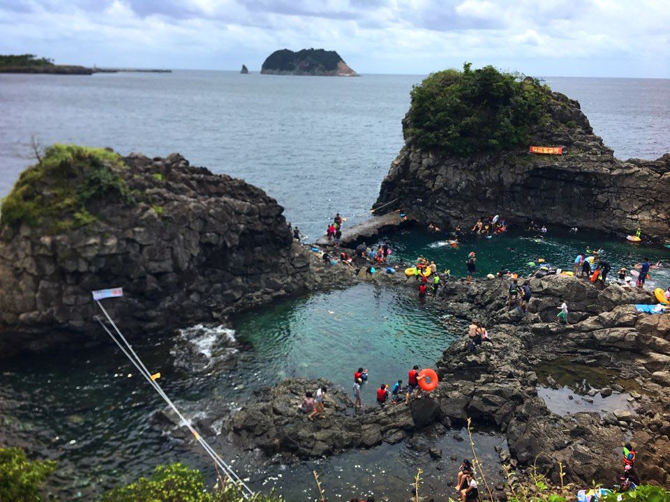
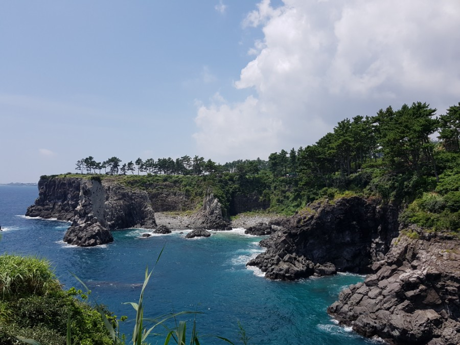

외돌개와 선녀탕
#제주도 #외돌개와선녀탕 #물놀이 #외돌개 #선녀탕
insta
map
064-760-3192
제주도 서귀포시 천지동에 있는 바위섬. 2011년 6월 30일 문화재청이 쇠소깍, 산방산과 함께 국가지정문화재 명승으로 지정했다. 높이는 20m로 삼매봉 남쪽 기슭에 있으며 바다 한복판에 홀로 우뚝 솟아 있다고 하여 '외돌개'라 한다. 150만 년 전 화산 폭발로 섬의 모습이 바뀔 때 생긴 바위섬으로 꼭대기에는 작은 소나무들이 몇 그루 자생하고 있다. 오르기에는 너무 위험한 기암절벽의 형태이며, 보는 방향에 따라 모양이 다르게 보인다.
제주 서귀포시 서홍동 791